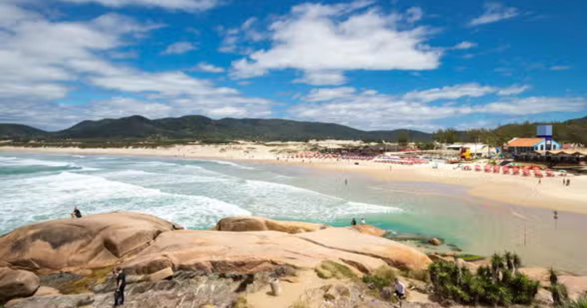

üë§ Visitante

Pontos Turísticos em Santa Catarina
Quer descobrir novos destinos e viver experiências inesquecíveis? Temos algumas sugestões de pontos turísticos que vão encantar você!

Ilha do Campeche
Conhecida por suas águas cristalinas e trilhas em meio à natureza preservada, a Ilha do Campeche é um destino ideal para quem busca praias paradisíacas e atividades ao ar livre.

Mirante do Morro da Cruz
Um dos melhores locais para apreciar uma vista panorâmica da cidade, o Mirante do Morro da Cruz oferece uma visão de 360º de Florianópolis, incluindo as praias e a Ilha de Santa Catarina.

Praia da Joaquina
Famosa pelas suas ondas, a Praia da Joaquina é um paraíso para os amantes do surfe, além de oferecer uma beleza natural deslumbrante e ótimas opções de lazer.